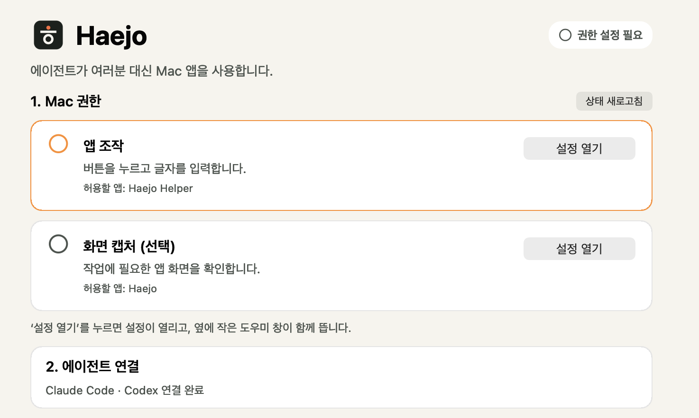

Tedious clicks?
Just say “해줘.”해줘 (hae-jo) is Korean for “do it for me.”
Haejo lets Claude Code and Codex operate your real Mac apps and your own Safari. You carry on with what you were doing.
Works withClaude Codex
Codex
Direct control
Your window stays put.
Work happens behind it.
Some chores have no API: the company system that is only a form, the setting that is only a button. Haejo reads that screen, clicks and types. Web work opens in your own Safari, already signed in, behind the app you are using.
Each web action takes the quietest route first
- Accessibility, in the background
Links, buttons, text fields, menus and date pickers. Your pointer and keyboard stay yours.
- Keys sent to that window
For fields that only react to key presses. Safari stays behind.
- Safari in front, briefly
For a menu that opens on pointer-down or on hover. Then the app you were using is in front again.
Every result names the route it took. Measured on Safari 27.2 across 22 kinds of page action; 20 finish in the background. See the matrix
Card expense entry
Q3 results summary
With onboarding finished for the new accounts, revenue
Tabs
Picks an open tab by its title and works in that page.
File attachments
Puts the files you name into the page’s file control and checks the name the page shows. Safari is in front for under a second while the file is picked.
Page scripts optional
Allow it in Safari’s Developer settings and Haejo also reads and fills tabs that are not showing.
Mac apps
TextEdit, Finder, Calculator: apps you work through menus and buttons are handled the same way.
History
Everything it did,
on record.
One request becomes one task. Open the history in the Haejo app to see which app it used, what it did and why, call by call, and how each one ended.

- For every task
What was asked and what the goal was.
- For every call
Why it was made, what it did, how it ended and how long it took.
- Kept on this Mac
Choose 7, 30 or 90 days of retention. The record holds what was done and why; screen contents and typed values stay out of it.
Flow
Do it once.
Replay it next month.
Save a finished task as a Flow. Next time, hand it the new values and Haejo runs the same steps and checks the result. Replay makes no model calls.
- Model calls
- 0
- Six December expenses replayed
- 20.7s
Measured replaying December’s six expenses in the film.
If the screen has changed and a button cannot be found, a run with auto-repair on has the agent fix that one step and carries on. View the Flow file
expense-entry
7 steps · only 6 values change- Date
{{date}} - Merchant
{{merchant}} - Category
{{category}} - Amount
{{amount}} - Project code
{{project}} - Description
{{memo}} - Register
check result
December replay
Saved Flow · new values only- KakaoT Taxi₩12,800entry confirmed 3.6 s
- Starbucks Seolleung₩22,400entry confirmed 3.4 s
- Office Depot₩45,600entry confirmed 3.3 s
- Korail KTX₩59,800entry confirmed 3.5 s
- Gimbap Cheonguk Yeoksam₩24,000entry confirmed 3.6 s
- Kyobo Book Gangnam₩28,000entry confirmed 3.3 s
Install
Three steps to
your first task.
-
Download and open
Open the DMG, drag Haejo to Applications and open it.
Download for MacVersion 1.0.2 · 85.2 MB · Apple Silicon · macOS 27.0 or later · Release notes
-
Allow two permissions
In the Haejo window, press 설정 열기 (Open Settings) next to each item; a small guide opens beside System Settings. App control goes to Haejo Helper. Screen capture goes to Haejo and is optional.
-
Run your first task
Opening the app connects Haejo to Claude Code and Codex. Press 첫 작업 시작 (Start first task) and the agent writes a welcome note in TextEdit and checks it. After that, just ask.
Enter this month’s eight card receipts into the expense system.

Does it work with both Claude and Codex?
Yes. Opening the Haejo app connects the haejo command and skill to Claude Code and Codex. A saved Flow replays the same way whichever agent wrote it.
Which browser does web work use?
Your own Safari, with the accounts you are signed in to and the tabs you have open, behind the app you are using. There is nothing to install in the browser.
Where is the history stored?
Only on this Mac; nothing is uploaded. Choose 7, 30 or 90 days of retention, and turn recording off or delete the stored records in Settings.
Does replaying a Flow really use no model?
Replaying a saved Flow makes zero model calls. Writing a Flow the first time uses your agent’s model, and so does auto-repair when it is on and the screen has changed.
What do I need?
An Apple Silicon Mac on macOS 27.0 or later, plus Claude Code or Codex. Windows support is experimental and Intel Macs are not supported. The app’s interface is in Korean.
How does it compare with an agent’s built-in computer use?
Run side by side with Codex’s built-in computer use on the same three tasks, Haejo used 53.5% fewer input tokens. Conditions and full numbers are on the benchmarks page.